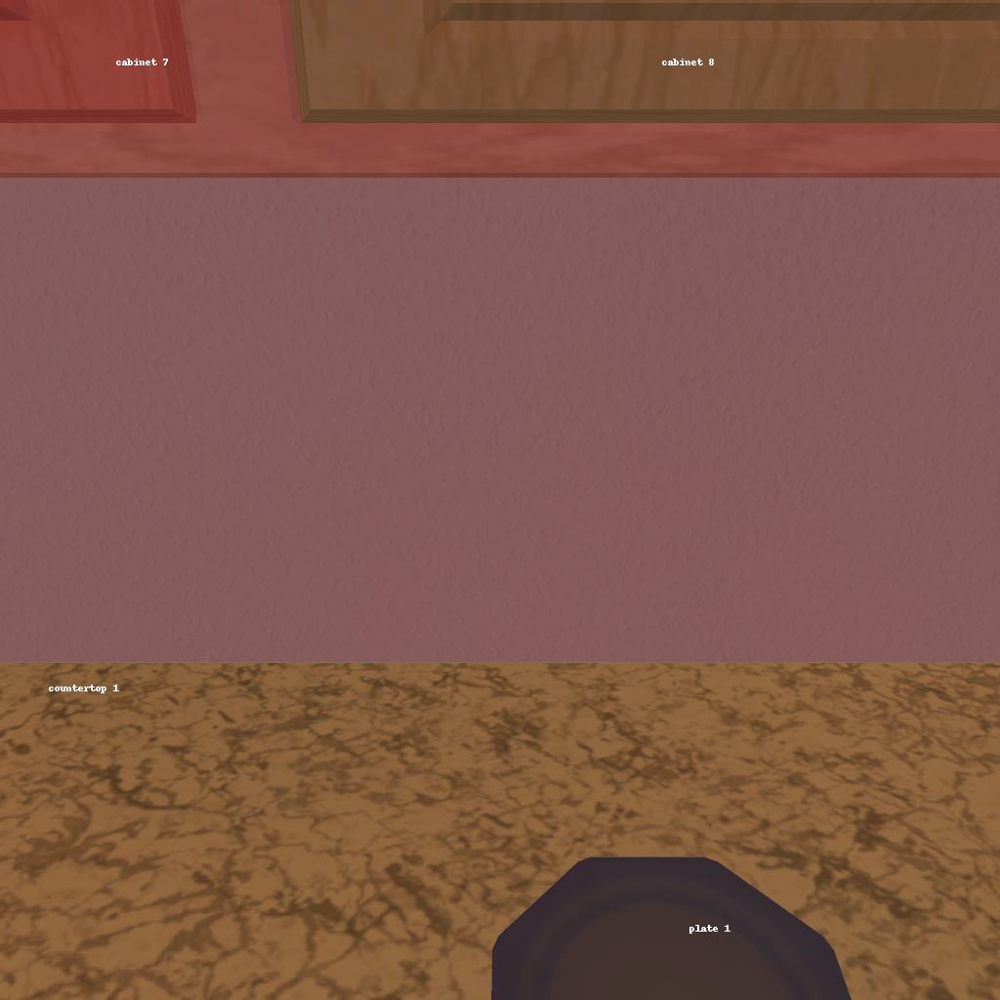

---------------------------------------------------------task: 19---------------------------------------------------------
--------------------------------------------------------------------------------------------------------------------------------------------------------------------
--------------------------------------------------------------------------------------------------------------------------------------------------------------------
Step:--------------------------------------------------------------------------19-------------------------------------------------------------------------------
----------------------------------------
VLM Prompt:
Image1:
Image2:
**Instruction**
1. Analyze the provided image to identify all visible household objects, focusing on those relevant to the task description "put a cool tomato in microwave."
2. Use the analysis of the image and the task hint "The agent must find an object of the desired type, pick it up, go to a fridge, cool the object with the fridge, then find the correct location to place it, and put it down there. The agent does not need to use the fridge button or open the fridge to cool the object, and the agent just needs to do action that is "cool the object with the fridge"." to answer the question: what is the most reasonable action in the choices for the task description "put a cool tomato in microwave"?
4. Decide and write the answer using the template: The answer is: (i): , where i is the real number. If there is no desired object in the image, search every place based on **Initial Observation** to find the object. And if no one is exactly correct, choose a similar answer.
**Initial Observation**
You are in the middle of a room. Looking quickly around you, you can see cabinet (1-15), fridge (1), countertop (1-4), drawer (1-4), microwave (1), toaster (1), coffeemachine (1), garbagecan (1), sink (1), stoveburner (1-3), sinkbasin (1)
**Answer Choices**
(1): go to cabinet 1
(2): go to cabinet 2
(3): go to cabinet 3
(4): go to fridge 1
(5): go to cabinet 4
(6): go to cabinet 5
(7): go to cabinet 6
(8): go to cabinet 7
(9): go to drawer 1
(10): go to drawer 2
(11): go to cabinet 8
(12): go to drawer 3
(13): go to cabinet 9
(14): go to cabinet 10
(15): go to drawer 4
(16): go to toaster 1
(17): go to cabinet 12
(18): go to cabinet 13
(19): go to cabinet 14
(20): go to cabinet 15
(21): go to countertop 2
(22): go to coffeemachine 1
(23): go to garbagecan 1
(24): go to countertop 3
(25): go to countertop 4
(26): go to sink 1
(27): go to stoveburner 1
(28): go to stoveburner 2
(29): go to stoveburner 3
(30): go to sinkbasin 1
(31): open cabinet 11
(32): close cabinet 11
(33): examine cabinet 11
**Answer**
Let's think step by step by following the instructions.
----------------------------------------
----------------------------------------
Original Response:
The task is to put a cool tomato in the microwave. To achieve this, the agent must first find a tomato. Since tomatoes are typically stored in a fridge or on a countertop, the agent should check these locations. However, the images provided do not show any tomatoes on the visible countertop or inside the open cabinet. Therefore, the agent must search other places.
Following the initial observation, the agent should first go to the fridge to check for a tomato, as it is common for tomatoes to be stored in a fridge to keep them cool. Once the tomato is found, the agent can then cool it with the fridge (even though the action of using the fridge button or opening the fridge is not necessary for this task). After cooling the tomato, the agent must find the microwave to complete the task.
According to the answer choices, the most reasonable action for the task description "put a cool tomato in microwave" is:
The answer is: (4): go to fridge 1
This action aligns with the task requirements and the initial observation of the environment.
----------------------------------------
----------------------------------------
>>> Refine Original VLM Response and Get Pure Action: go to fridge 1
This action aligns with the task requirements and the initial observation of the environment
----------------------------------------
-----------------------------------------------------------------
Running time: 13.71929383277893 seconds
Total Money: 9.511380000000006
-----------------------------------------------------------------
-----------------------------------------------------------------
Text Observation:Nothing happens.
-----------------------------------------------------------------
UNSUCCEED